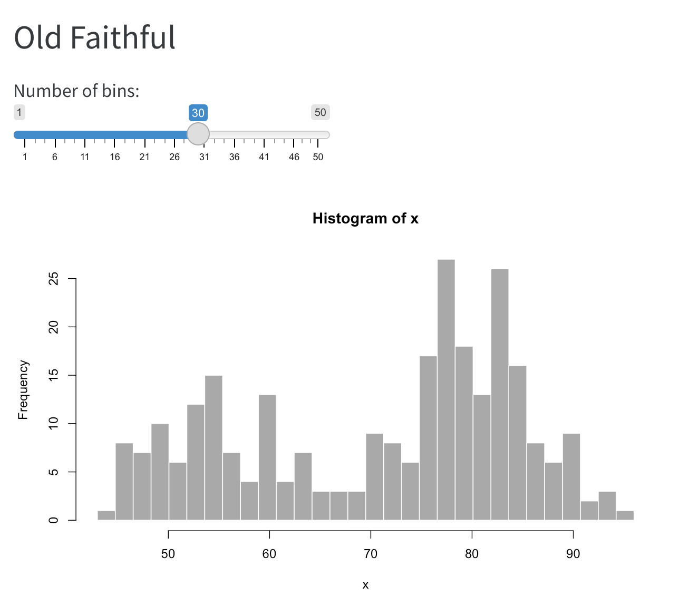

Shiny
Introduction
If you are an R user, you may already be familiar with Shiny, a package that makes it easy to build interactive web apps with R.
When using the Knitr computation engine, Quarto documents can include embedded Shiny components (e.g. a plot with sliders that control its inputs) or even simple Shiny applications that include several components.
This section covers integrating Shiny with Quarto and assumes that you already have basic familiarity with Shiny. To learn more about Shiny please visit https://shiny.rstudio.com.
In order to run the examples below you will need the very latest version of the rmarkdown package (v2.10), which you can install with:
install.packages("rmarkdown")Hello, Shiny
For example, here’s a document that contains a plot of the “Old Faithful” dataset along with a slider to control the number of bins:

Here’s the source code for this example:
---
title: "Old Faithful"
format: html
server: shiny
---
```{r}
sliderInput("bins", "Number of bins:",
min = 1, max = 50, value = 30)
plotOutput("distPlot")
```
```{r}
#| context: server
output$distPlot <- renderPlot({
x <- faithful[, 2] # Old Faithful Geyser data
bins <- seq(min(x), max(x), length.out = input$bins + 1)
hist(x, breaks = bins, col = 'darkgray', border = 'white')
})
```There are two important differences between this document and a normal static document:
The inclusion
server: shinywithin the document’s options, which instructs Quarto to run a Shiny Server behind the document:--- title: "Old Faithful" format: html server: shiny ---The inclusion of
context: serveras an option in the second code chunk, which delineates this R code as running within the Shiny Server (this is the code you would typically put inserver.R):```{r} #| context: server ```
We’ll cover running and deploying Quarto documents with Shiny components in the article on Running Documents. Before that though, let’s cover a more in-depth example.
K-Means Example
Here’s an example that includes multiple inputs as well as a more application like page layout with a sidebar:

Here’s the source code for this example:
---
title: "Iris K-Means Clustering"
format:
html:
page-layout: custom
server: shiny
---
```{r}
#| panel: sidebar
vars <- setdiff(names(iris), "Species")
selectInput('xcol', 'X Variable', vars)
selectInput('ycol', 'Y Variable', vars, selected = vars[[2]])
numericInput('clusters', 'Cluster count', 3, min = 1, max = 9)
```
```{r}
#| panel: fill
plotOutput('plot1')
```
```{r}
#| context: server
selectedData <- reactive({
iris[, c(input$xcol, input$ycol)]
})
clusters <- reactive({
kmeans(selectedData(), input$clusters)
})
output$plot1 <- renderPlot({
palette(c("#E41A1C", "#377EB8", "#4DAF4A", "#984EA3",
"#FF7F00", "#FFFF33", "#A65628", "#F781BF", "#999999"))
par(mar = c(5.1, 4.1, 0, 1))
plot(selectedData(),
col = clusters()$cluster,
pch = 20, cex = 3)
points(clusters()$centers, pch = 4, cex = 4, lwd = 4)
})
```There are a few things worth noting in this example:
- The YAML front-matter includes the
page-layout: customoption (to indicate we want our content to occupy the entire page rather than being centered with padding). - We add
panel: sidebarandpanel: fillto the two code chunks that define the user-interface to specify that we want them laid out in special panel containers. - We again use
context: serveron the last R code chunk to indicate that it contains the Shiny Server code.
Page Layout
Some interactive documents you create will use narrative interspersed with Shiny components and some (like this example) will be full page applications. Some may even by hybrids—for example imagine a sidebar on the left containing inputs that control outputs interspersed with narrative in the main document body.
See the article on Component Layout to learn more about the available tools for managing the layout of interactive documents.
Learning More
To learn more about Shiny interactive documents see the following articles:
Running Documents covers how to run interactive documents both within RStudio and at the command line, as well as how to deploy them to end users.
Execution Contexts goes in depth on when different code blocks (e.g. rendering vs. serving) run as well as how to cache expensive computations for more responsive documents.
External Resources describes how to make sure that Shiny can locate resources (e.g. CSS, JS, images, etc.) that you include in your document.
Component Layout enumerates the various techniques you can use to layout interactive components within your documents.
If you are using both JavaScript and Shiny to create interactive documents, you might also be interested in the article on using Shiny Reactives with OJS.